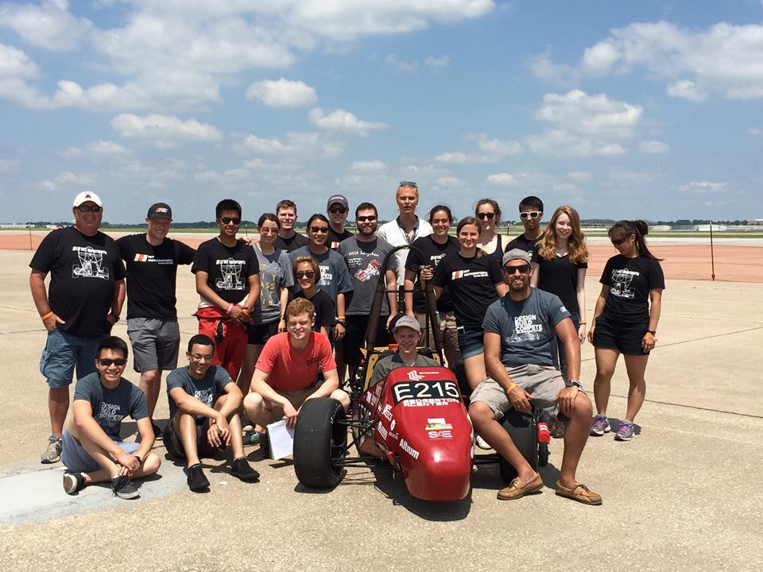
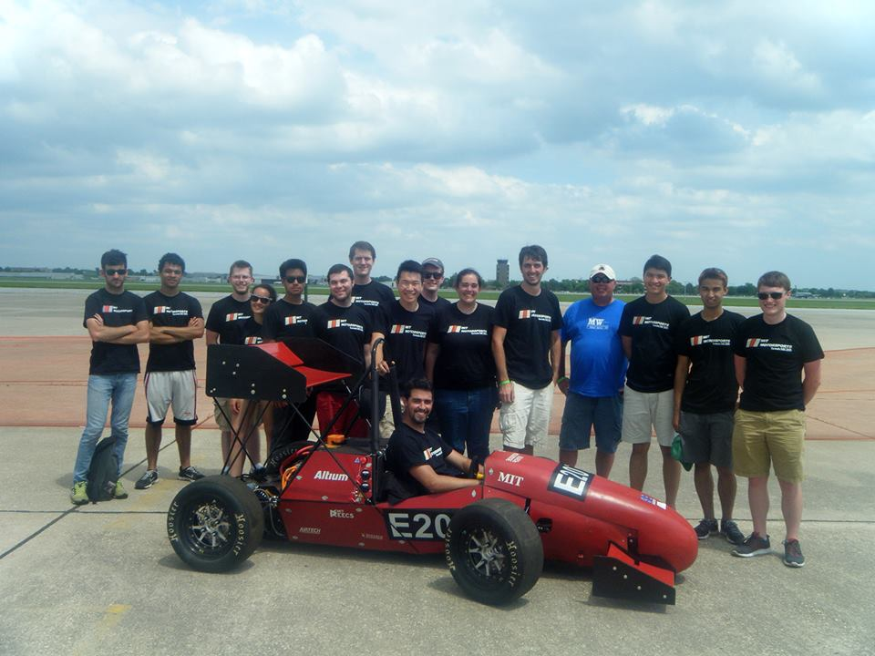
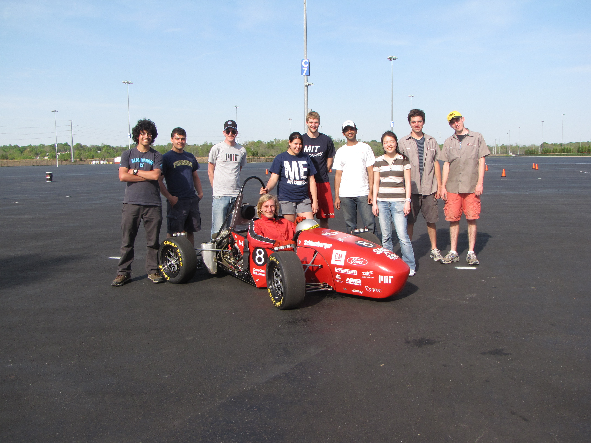
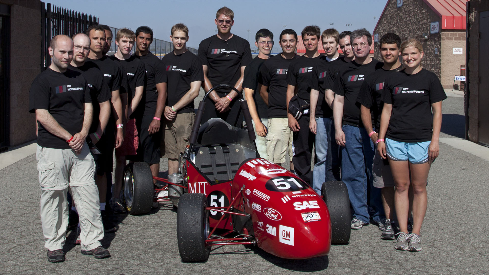

Car
Design
We design a new car from the ground up every year. The team maximizes vehicle handling by driving design off of the suspension points. Every part is 3D modeled in CAD to allow for precise geometry and packaging. Further analysis is conducted using finite element analysis to optimize strength while minimizing weight.
Manufacturing
We build the parts that we design. Team members have the opportunity to learn more by working in a full machine shop with manual and CNC machines, rapid prototyping machines and waterjet cutters. By manufacturing precision racing parts, team members apply the “design for manufacturing” principle. Finding the balance between geometry optimization and available tools allows the team to develop a sense of what is possible and where innovation lies.
Development
Building the car is only half of the process. Upon completion of various systems, we validate the design through component and vehicle testing. Custom electronics are used to relay data to the team that help tune the vehicle and improve the driver’s ability.
Performance
The vehicle’s handling and efficiency is drastically improved via weight reduction. MY17 weighs in at 230 kilograms withoutdriver, and has a 100kW Emrax motor that outputs 240 Nm of torque to allow the driver to reach 70 mph quicker than you can read this sentence. To reach maximum performance, the suspension uses 4-way adjustable coilovers to allow the car to sit an inch off the ground, andslick racing tires allow the driver to experience up to 1.5 G’s of lateral acceleration mid-turn.
The MIT Motorsports Tradition
MIT first entered the Formula SAE competition when two freshmen founded the team in 2001. Since MIT first stepped foot on the race track in 2003, the team has steadily learned more and improved its performance. From the humble beginnings of a 97th place finish in 2003 and a 41st place finish in 2004, the team used its experiences to eventually achieve a 2nd place overall at FSAE Electric in 2017.
Model Year 2018
The team is always striving for innovation and improvements. Armed with a strong cohort of young engineers, the team is engineering MY18 with the intent of preparing for a major design leap that will debut in 2019.
Simulation
Our ultimate goal is to predict the autocross lap time of the car when the car still only exists on a computer screen. This means we can tune the car virtually, and arrive at the exact stiffness, weight, and power requirements that we need for the car to perform well. We are developing an accurate parametric vehicle simulation in MATLAB to cut down on unnecessary safety margins and allow for more aggressive designs. Validated by data over the course of a few years, this tool will help us jump ahead of the competition.
Telemetry
Data is the basis of verification, validation, and iteration. With your help, we will double the number of onboard sensors to record everything from power draw to lateral acceleration and brake temperature. This information is extremely valuable for tuning the car prior to competition, as well as monitoring the performance of the car during operation to prevent failures before they happen.
Carbon Fiber
Carbon-reinforced materials are used extensively in motorsports, because of their incredible strength and low weight. The R&D team is looking to change several steel components to carbon fiber. In order to make this change the team is workıng to accurately model tubes in FEA and validate the simulations with empirical testing. After this initial testing the team will scale to replacing the half shafts wıth carbon fiber tube. With the lessons learned from the first carbon fiber components we hope to scale to some more critical elements such as pushrods and A arms. This is all leading up to a transition from a chromoly space frame to a half carbon fiber monocoque for model year 19.
4 Wheel Drive R&D
Using our existing rear wheel drive setup, team members are rigorously testing the limited slip differential to determine the peak performance possible via tuning and car setup. Once we determine that performance with our current 2WD, single motor setup, then we can take a look at the limiting factors to performance. This will allow us to start simulating different types of 4WD setups and conducting trade studies to determine what we will pursue on MY19.
Model Year 2017
The car is a complex machine made of many mechanical and electrical subsystems. Team members work in various engineering disciplines according to their skills or interests. This results in a diverse spread of skills from statics and fluids to microelectronics and controls.

Electric Control Unit
Our car's electronics are designed with safety and reliability in mind. The custom battery management system monitors the battery's voltage and temperature and can automatically shut off the car in case of an emergency. The custom VCU logs real-time data over radio and applies control algorithms that send torque commands to the motor controllers. Building the system in house gave us full control of parts selection and form factor which improved reliability and performance.
Powertrain
The drivetrain was designed with three significant goals in mind: making it lightweight, stiff and easy to service. By moving from two motors to one Emrax 228 MV and using a Drexler limited slip differential, MY17’s drivetrain mass was nearly cut in half. A Unitek Bamocar D3 400/400 served as the motor controller to command vehicle motion after its internals were removed and packaged into a single, self contained package.
Uprights
MATLAB analysis of smaller and lighter deep groove wheel bearings led to a wider profile for the uprights in order to maintain reasonable radial loads. Uprights themselves were 3-axis CNC machined from 7075 aluminum to accurately produce parts that meet our strength requirements with less weight. The camber adjustment mechanism also allows for easy, quick adjustments, increasing the ease of service.
High Voltage Electrical System
We designed the tractive system with safety, reliability, and performance in mind. It’s powered by a custom built arrangement of Samsung INR18650-25R cells, producing a peak voltage of 300V and containing 7.02 kWh of energy to allow for quick acceleration as well as long-term endurance runs. The entire pack is separated into 6 polycarbonate modules that allow for quick interchanges when issues are present. Keeping with the team philosophy, the in-house packs minimize weight while maintaining a strong structure to withstand the stresses of a day on track.
Aerodynamics
The MY17 aero package has three times the downforce of the MY16 design with only a 45% increase in total drag. The rear wing also features a pneumatic actuated upper element to decrease drag on the straights, leading to a 25% reduction in total aero energy consumption per lap. The front wing features gurney flaps on the endplates and strakes on the underside of the wing, both of which decrease spanwise flow over the wing elements which improves downforce by roughly 10% each. Overall, we achieve wing efficiency of L/D=19.
2017 Formula SAE Electric Competition at Lincoln Air Park
The annual Formula SAE electric vehicle competition was held by the Society of Automotive Engineers at the Lincoln Airpark.The team arrived in Lincoln, Nebraska having not driven through a checkered flag since 2012. In the weekend’s first dynamic event, MIT placed 5th in Acceleration- a significant accomplishment as MIT has now taken a checkered flag under electric power. The following two events, Skid Pad and Autocross, resulted in competitive 3rd place efforts. Finishing the weekend strong, suspension lead Will Harvey (‘18) clocked the fastest EV lap of the Endurance event at 83.7 seconds before handing the car off to team captain Luis Mora (‘18), who powered the car to a strong 2nd place. With cost, business, and design scores factored in, the team placed 2nd overall in the EV category!
Model Year 2016
Model Year 2015
MY15 was the team’s first completed running electric vehicle, allowing for preliminary testing and data acquisition. It featured a newly designed aerodynamics package, the first in team history.
Model Year 2014

Model Year 2012
The two year build cycle from 2012 - 2013 was the end of a era and the start of a new adventure: the team would build an internal combustion car for the last time. The team successfully competed in the 2012 Formula SAE Michigan competition, placing 16th out of 120 teams. The team again placed in the top 5 for its fuel economy, with its ethanol fueled car, as well as top 5 for its cost report score. MY12 was also able to impress the judges with its custom intake, fully adjustable suspension, and modified 4-cylinder engine.
Model Year 2010
The team switched to a two year cycle to allow for more development and testing, which proved to be a great advantage for design and development. MIT was able to finish 8th overall in the 2010 FSAE West competition, the best in MIT’s history since its founding in 2001. The team’s highest ranking event was fuel economy, where the ethanol fueled car finished in 2nd place.
